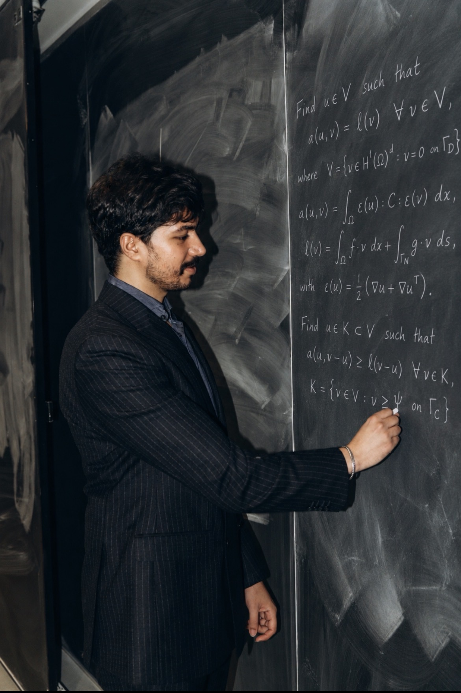

Mohamed Laaziri
Applied mathematician specialising in numerical methods
Postdoctoral researcher · CEA IRESNE · Cadarache, France
My current research concerns nuclear severe accidents, with a focus on modelling the interaction between molten reactor materials (corium) and concrete. I develop numerical methods and scientific software to study the coupled flow, heat transfer, and material evolution involved in these problems.
My background is in numerical analysis of partial differential equations. During my PhD, I developed and analysed discretisations for flow, heat transfer, and mechanical deformation in fractured porous media, including contact and friction between fracture surfaces.

PhD thesis
Numerical modelling of thermo-hydro-mechanical processes in fractured porous media
Mohamed Laaziri · Université Côte d’Azur · 2025
Read my PhD thesis — HAL version 1
My preferred version for reading and sharing is tel-05472966v1. Thesis overview and citation.
Main research topics
- Numerical methods for PDEs: finite elements, finite volumes, Virtual Element Methods, and Nitsche formulations; stability, convergence, and energy estimates.
- Computational fluid dynamics (CFD): incompressible Navier–Stokes equations and multiphase flows.
- Interface tracking: Volume of Fluid (VOF) methods with Piecewise Linear Interface Calculation (PLIC); surface tension and capillarity.
- Heat transfer: conduction, convection, and coupling with flow and concrete ablation.
- Concrete damage and fracture modelling: thermomechanical response and the Mazars damage model, within ongoing multiphysics development.
- Coupled multiphysics: thermal-hydraulics, mechanics, evolving interfaces, and contact and friction.
- Scientific computing: nonlinear solvers, numerical implementation, and coupling between simulation codes.
Research applications
Nuclear severe accidents — current work
I study how corium transfers heat to concrete and how the resulting concrete ablation changes the interacting materials. My work contributes to the development of mesoscopic models in CIMAC, with ongoing work towards coupling thermal-hydraulic and concrete-mechanical calculations. The aim is to better understand these mechanisms and improve their representation in severe-accident simulations.
WCCM–ECCOMAS 2026 research abstract
Fractured rocks — doctoral research
My earlier work studies how fluid pressure and temperature changes deform fractured rocks and affect fracture opening or sliding. These questions arise in geothermal fluid injection and geological storage. My contribution is the development and analysis of numerical schemes for such coupled models, tested on computational benchmarks.
Selected publications
- VEM fully discrete Nitsche’s discretization of Coulomb frictional contact-mechanics for mixed-dimensional poromechanical modelsComputational Geosciences, 29, article 50 (2025)
- VEM-Nitsche fully discrete polytopal scheme for frictionless contact-mechanicsSIAM Journal on Numerical Analysis, 63(1), 81–102 (2025)
- Discretisations of mixed-dimensional Thermo-Hydro-Mechanical models preserving energy estimatesJournal of Computational Physics, 515, 113295 (2024)
Research software
I develop scientific software for fractured-media models, contact mechanics, and coupled multiphysics problems. This includes Fortran implementations of numerical methods and nonlinear solvers.
THM and fracture-contact research code · Software and computational methods
Contact
CEA IRESNE, Cadarache, France
mohamed.laaziri@cea.fr